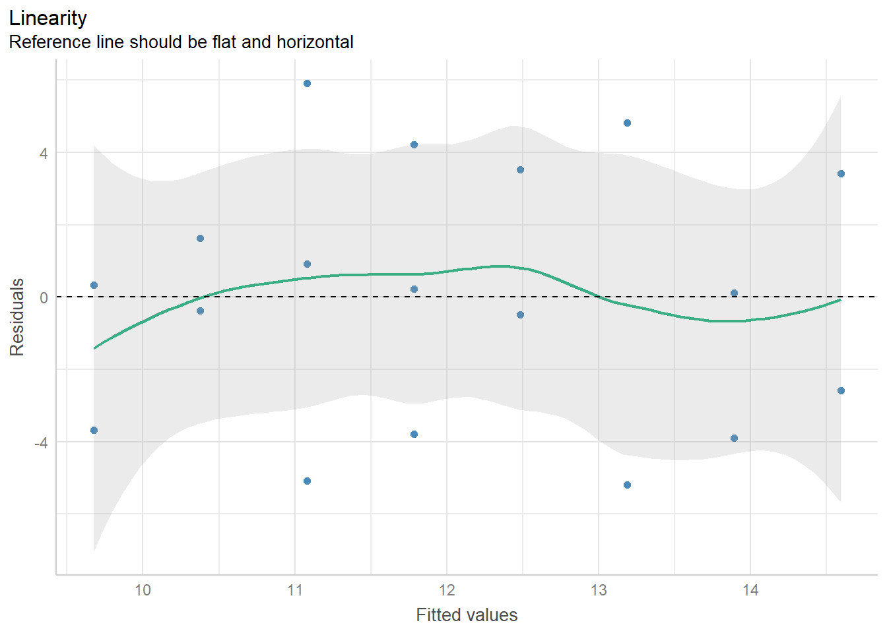

14 Einfache lineare Regression
14.1 Anwendungsbereich
Die lineare Regression wird zur Vorhersage einer metrischen Variable durch eine (einfache lineare Regression) oder mehrere (multiple lineare Regression) metrische Variablen verwendet.
Der Zusammenhang wird als Einfluss einer erklärenden Variable1 (predictor variable) auf eine zu erklärende Variable2 (outcome/response variable) quantifiziert. Dabei ist wichtig, dass mit Zusammenhang nicht zwingend ein Kausalzusammenhang gemeint ist. Kausalzusammenhänge müssen zusätzlich theoretisch begründet und methodisch implementiert (z.B. durch ein experimentelles Design) sein.
Die lineare Regression modelliert den Zusammenhang zweier Variablen mit einer linearen Funktion (Gerade). Hierbei werden die Werte der zu erklärenden Variablen \(y\) als Funktion der erklärenden Variable \(x\) modelliert, \(y = f(x)\). Berechnet wird ein Achsenabschnitt (intercept) und ein Regressionskoeffizient für die Steigung (slope) der Gerade, um zu quantifizieren, wie stark sich ein Variablenwert verändert wenn die andere Variable um eine Einheit zu nimmt. Dies dient der Vorhersage der Ausprägung einer Variable (Regressor) aus der Ausprägung einer anderen Variable (Regressand).
Dieser Methode ermöglicht:
- Beschreiben von Merkmalsunterschieden/-zusammenhängen ohne Wirkrichtung bzw. ohne kausalen Zusammenhang
- Beschreiben/Feststellen von kausalen Zusammenhängen (bei theoretischer Begründung und methodischer Implementation/experimenteller Studie)
- Prognose bzw. Vorhersage/Prädiktion von Merkmalsausprägungen für neue Datenpunkte
- Prädiktion von neuen Werten
Typische Fragestellungen:
Wie wirkt sich die wöchentliche Trainingszeit in einer Aufgabe auf die Reaktionszeit aus?
Beeinflusst die Berufserfahrung in Jahren das Jahreseinkommen?
Steigt das Risiko einer psychischen Erkrankung mit zunehmendem Alter?
Wie gross ist das Risiko einer Erkrankung bei vorliegendem Testscore?
14.2 Voraussetzungen
| Voraussetzung | Beschreibung | Vorgehen bei Verletzung |
|---|---|---|
| Abhängige Variable | eine abhängige Variable mit metrischem Skalenniveau | bei kategorialer Variable: logistische Regression. |
| Unabhängige Variable | eine unabhängige Variable mit metrischem Skalenniveau | Verwenden eines anderen statistischen Verfahrens (z.B. t-Test, ANOVA) oder Kodierung der UV durch Kodiervariablen (Dummy-Codierung) |
| Linearität | Linearer Zusammenhang zwischen den beiden Variablen. Die Linearitätsannahme kann durch die visuelle Inspektion des Punktediagramms (Scatterplot) überprüft werden. | bei nichtlinearem Zusammenhang zwischen den Variablen: Variablen transformieren (z.B. Logarithmierung) oder Anwenden von Multipler Regressionsanalyse zur Analyse nichtlinearer Zusammenhänge |
| Varianzhomogenität / Homoskedastizität | Die Abweichung von \(y\) von der Regressionsgeraden sollte über verschiedene Werte der Prädiktorvariablen \(x\) ähnlich sein und nimmt nicht signifikant zu oder ab. | Transformation von \(y\), alternative Schätzmethoden oder Bootstrapping |
| Normalverteilung der Residuen | Ob die Residuen normalverteilt sind, kann mit einem Q-Q-Plot und dem Shapiro-Wilk-Test überprüft werden. | Transformation von \(y\), alternative Schätzmethoden oder Bootstrapping |
| Unabhängigkeit der Fehler | Die Stichprobe muss so erhoben werden, dass die Merkmalsträger voneinander unabhängig sind. | Hierarchisch lineares Modell, dass die Abhängigkeit innerhalb der Datenstruktur berücksichtigt. |
14.3 Grundkonzepte und Vorgehen

14.3.1 Vorverarbeitung
Daten einlesen, vorverarbeiten und visualisieren
Zuerst müssen die Daten eingelesen und je nach Bedarf vorverarbeitet werden.
Daten für eine einfache lineare Regression können mit einem Punktediagramm (scatterplot) diagnostisch visualisiert werden. Üblicherweise (aber nicht zwingend) wird die Prädiktorvariable (unabhängige Variable) auf der \(x\)-Achse und Kriteriumsvariable (abhängige Variable) auf der \(y\)-Achse abgetragen.
Scatterplots eignen sich besonders gut, um folgende Probleme zu identifizieren:
- Schlechte Datenqualität durch fehlende Werte
- Verzerrung der Resultate durch Extremwerte (Outlier)
- Nichtlinearer Zusammenhang der beiden Variablen
Voraussetzungen überprüfen
Vor dem Berechnen der Regressionsanalyse
Skalenniveau der beiden Variablen: Beide Variablen sollten metrisch sein.
Linearitätsannahme: Durch ein Punktediagramm bzw. Scatterplot kann ein starker, nichtlinearer Zusammenhang der Variablen ausgeschlossen werden. Die meisten Zusammenhänge in der Psychologie und in den Verhaltenswissenschaften sind nur annähernd linear. Bei leichten Abweichungen kann trotzdem eine einfache lineare Regression ausgeführt werden.
Nach dem Berechnen der Regressionsanalyse
Homoskedastizität
Normalverteilung der Fehlervariablen
Unabhängigkeit der Fehler
14.3.2 Analyse
Regressionsgleichung
Bei der Regressionsanalyse wird eine Regressionsgerade in die Datenpunkte gelegt.
Die Regressionsgerade wird durch den Achsenabschnitt \(b_0\) (intercept) und den Regressionskoeffizienten \(b_1\) (slope) definiert.
Die Bestimmungsgleichung für die Regressionsgerade lautet:
\(\hat{y} = b_0 + b_1 \cdot x\)
Für einzelne Datenpunkte lautet die Bestimmungsgleichung
\(\hat{y}_m = b_0 + b_1 \cdot x_m\)
wobei
\(m\): Beobachtungseinheit (Person)
\(y_m\): Wert der Kriteriumsvariable (AV) der Beobachtungseinheit \(m\)
\(x_m\): Wert der Prädiktorvariable (UV) der Beobachtungseinheit \(m\)
\(b_0\): Achsenabschnitt (intercept): Wert, welcher \(y\) annimmt, wenn \(x = 0\) bzw. bei welchem die Regressionsgerade die y-Achse schneidet beim Wert 0 auf der x-Achse.
\(b_1\): Regressionskoeffizient/Steigung (slope): Steigung der Regressionsgeraden.
Bestimmung des Regressionskoeffizienten \(b_1\)
Der Regressionskoeffizient bzw. die Steigung (slope) wird mit folgender Gleichung bestimmt:
\(b_1 = r_{xy} \cdot \frac{s_y}{s_x} = \frac{s_{xy}}{s^2_x}\)
wobei
- \(r_{xy}\): Produkt-Moment-Korrelation von \(x\) und \(y\)
- \(s_y\): Standardabweichung von \(y\)
- \(s_x\): Standardabweichung von \(x\)
- \(s_{xy}\): Kovarianz von \(x\) und \(y\)
Bei der Regression standardisierter Werte entspricht die Steigung \(b_{1s}\) der Produkt-Moment-Korrelation \(r_{xy}\) zwischen den beiden Variablen.
Bestimmung des Achsenabschnitts \(b_0\)
Der Achsenabschnitt (intercept) wird mit folgender Gleichung bestimmt:
\(b_0 = \bar{y} - b_1 \cdot \bar{x}\)
wobei
- \(\bar{x}\): Mittelwert von \(x\)
- \(\bar{y}\): Mittelwert von \(y\)
Bei der Regression standardisierter Werte entspricht der Achsenabschnitt immer 0, also \(b_{0s} = 0\).
Prädiktion neuer Werte
Wenn \(b_0\) und \(b_1\) bekannt sind, kann ein beliebiger Wert \(x_m\) gewählt3 und der dazugehörige Wert \(\hat{y}_m\) geschätzt werden.
\(\hat{y}_m = b_0 + b_1 \cdot x_m\)
Für die Vorhersage neuer Werte wird der Fehlerterm \(e\) hierbei weggelassen. Sollen Daten simuliert werden (beispielsweise zur Planung von Datenanalysen wie Poweranalysen oder Präregistrationen), kann der Fehlerterm hinzugefügt werden, um möglichst “natürliche” Daten zu erhalten.
Regressionsresiduum, Quadratsummenzerlegung und Varianzzerlegung
Die Differenz zwischen dem durch die Regressionsgleichung vorhergesagten Wert (\(\hat{y}_m\)) und dem tatsächlichen (beobachteten) Wert (\(y_m\)) wird Regressionsresiduum/Fehlerwert genannt.
\(y_m = \hat{y}_m + e = b_0 + b_1 \cdot x_m + e_m\)
wobei
- \(e_m\): Regressionsresiduum/Fehlerwert (Unterschied zwischen dem vorhergesagten und tatsächlichen Wert) der Beobachtungseinheit \(m\)
Der Fehlerterm ist nötig, weil in der Praxis die Regressionsgerade nie genau auf allen Punkten zu liegen kommt, dh. kein perfekter Zusammenhang der Variablen vorhanden ist.
Die Residualvarianz (Fehlervarianz) wird berechnet mit
\(s^2_e =\frac{\sum^n_{m=1} (y_{m} - \hat{y}_m)^2}{n}\).
Die Standardabweichung des Regressionsresiduums ist die Quadratwurzel daraus
\(s_e = \sqrt{s^2_e} = \sqrt{\frac{\sum^n_{m=1} (y_{m}- \hat{y}_m)^2}{n}}\)
Es gilt
\(s_e = s_y \cdot \sqrt{1 - r^2_{xy} }\)
Die Quadratsumme beobachteten Abweichungen \(QS_y\) besteht aus der Quadratsumme der Regressionsresiduen \(QS_e\) und der geschätzten \(y\)-Werte \(QS_\hat{y}\).
\(\sum^n_{m=1}(y_{m}- \bar{y})^2 = \sum^n_{m=1} (y_{m}- \hat{y}_m)^2 + \sum^n_{m=1} (\hat{y}_m - \bar{y})^2\)
\(QS_y = QS_e + QS_\hat{y}\)
Die Varianz kann wie folgt zerlegt werden
\(\frac{\sum^n_{m=1}(y_{m}- \bar{y})^2}{n} = \frac{\sum^n_{m=1} (y_{m}- \hat{y}_m)^2}{n} + \frac{\sum^n_{m=1} (\hat{y}_m - \bar{y})^2}{n}\)
\(s^2_y = s^2_e + s^2_\hat{y}\).
Determinations- und Indeterminationskoeffizient
Der Determinationskoeffizient \(R^2\) kann einen Wert zwischen 0 und 1 annehmen. Bei keiner Korrelation entspricht \(R^2 = 0\), bei einer perfekten Korrelation entspricht \(R^2 = 1\). Für Werte zwischen 0 und 1 gilt, dass \(c \cdot 100%\) der Varianz in \(y\) durch Variation in \(x\) erklärt wird, also zurückgeführt werden kann. Ein Determinationskoeffizient von \(0.45\) bedeutet also, dass 45% der Varianz in \(y\) durch Variation in \(x\) erklärt werden kann.
Determinationskoeffizient: \(R^2 = \frac{s^2_\hat{y}}{s^2_y}\)
Indeterminationskoeffizient: \(1- R^2 = \frac{s^2_e}{s^2_y}\)
Teststatistik berechnen
Um zu überprüfen, ob die beiden Variablen signifikant zusammenhängen, kann die Teststatistik berechnet werden. Die Nullhypothese kann durch das Vergleichen des Prüfwerts mit einer \(t\)-Verteilung mit \(df = n-2\) Freiheitsgraden und/oder durch das Konstruieren von Konfidenzintervallen überprüft werden.
Regressionskoeffizient \(b_1\) überprüfen
Die Nullhypothese lautet üblicherweise
\(H_0: \beta_1 = \beta_{10}\)
Wenn \(\beta_{10} = 0\): Der Regressionskoeffizient unterscheidet sich nicht von 0.4
Zur Überprüfung der Nullhypothese wird die Prüfgrösse berechnet, die einer \(t\)-Verteilung folgt mit \(df = 2\)
- \(t_{emp} : \frac{b_1 - \beta_{10}}{\hat{\sigma}_{B_1}}\)
- \(t_{krit}: t_{(1-\frac{\alpha}{2};n-2)}\)
Wenn \(t_{emp} > t_{krit}\) kann die Nullhypothese abgelehnt werden.
Geschätzte Populationsresidualvarianz \(\hat{\sigma}^2_{\varepsilon}\) und Varianz von \(B_1\) \(\hat{\sigma}^2_{B_1}\)
Die geschätzte Varianz (quadrierter Standardfehler) von \(B_1\), \(\hat{\sigma}^2_{B_1}\) kann berechnet werden mit:
\(\hat{\sigma}^2_{B_1} = \frac{\hat{\sigma}_{\varepsilon}}{\sqrt{n - s^2_x}}\)
wobei:
- Die Populationsresidualvarianz \(\sigma^2_{\varepsilon}\) meist nicht bekannt ist und geschätzt wird mit
\(\hat{\sigma}^2_{\varepsilon} = \frac{\sum^n_{m=1} e^2_m}{n-2} = \frac{\sum^n_{m=1} (y_m - \hat{y}_m)^2}{n-2}\).
- Der geschätzte Standardschätzfehler (die geschätzte Standardabweichung der Residuen) entspricht somit
\(\hat{\sigma}_{\varepsilon} = \sqrt{\frac{\sum^n_{m=1} e^2_m}{n-2}} = \sqrt{\frac{\sum^n_{m=1} (y_m - \hat{y}_m)^2}{n-2}}\).
Das Konfidenzintervall entspricht
[\(b_1 - t_{(1-\frac{\alpha}{2};n-2)} \cdot \hat{\sigma}_{B_1}\) ; \(b_1 + t_{(1-\frac{\alpha}{2};n-2)} \cdot \hat{\sigma}_{B_1}\)].
Wenn das Konfidenzintervall 0 nicht enthält, kann die Nullhypothese abgelehnt werden.
Achsenabschnitt \(b_0\) überprüfen:
- \(H_0: \beta_0 = \beta_{00}\)
Wenn \(\beta_{00} = 0\): Der Achsenabschnitt unterscheidet sich nicht von Null.5
Zur Überprüfung der Nullhypothese wird die Prüfgrösse berechnet, die einer \(t\)-Verteilung folgt mit \(df = 2\)
- \(t_{emp} = \frac{b_0- \beta_{00}}{\hat{\sigma}_{B_0}}\)
- \(t_{krit}: t_{(1-\frac{\alpha}{2};n-2)}\)
Wenn \(t_{emp} > t_{krit}\) kann die Nullhypothese abgelehnt werden.
Geschätzte Populationsresidualvarianz \(\hat{\sigma}^2_{\varepsilon}\) und Varianz von \(B_0\) \(\hat{\sigma}^2_{B_0}\)
Die geschätzte Varianz (quadrierter Standardfehler) von \(B_0\), \(\hat{\sigma}^2_{B_0}\) kann berechnet werden mit:
\(\hat{\sigma}^2_{B_0} = \hat{\sigma}^2_{\varepsilon} \cdot (\frac{1}{n} + \frac{\bar{x}^2}{n \cdot s^2_x})\)
somit:
\(\hat{\sigma}_{B_0} = \hat{\sigma}_{\varepsilon} \cdot \sqrt{\frac{1}{n} + \frac{\bar{x}^2}{n \cdot s^2_x}}\)
wobei:
- Die Populationsresidualvarianz \(\sigma^2_{\varepsilon}\) meist nicht bekannt ist und geschätzt wird mit
\(\hat{\sigma}^2_{\varepsilon} = \frac{\sum^n_{m=1} e^2_m}{n-2} = \frac{\sum^n_{m=1} (y_m - \hat{y}_m)^2}{n-2}\).
- Der geschätzte Standardschätzfehler (die geschätzte Standardabweichung der Residuen) entspricht somit
\(\hat{\sigma}_{\varepsilon} = \sqrt{\frac{\sum^n_{m=1} e^2_m}{n-2}} = \sqrt{\frac{\sum^n_{m=1} (y_m - \hat{y}_m)^2}{n-2}}\).
Das Konfidenzintervall entspricht
[\(b_0 - t_{(1-\frac{\alpha}{2} ; n-2)} \cdot \hat{\sigma}_{B_0}\) ; \(b_0 + t_{(1-\frac{\alpha}{2};n-2)} \cdot \hat{\sigma}_{B_0}\)].
Wenn das Konfidenzintervall 0 nicht enthält, kann die Nullhypothese abgelehnt werden.
14.3.3 Schlussfolgerungen
Ergebnisse interpretieren und berichten
Für die einfache lineare Regressionsanalyse werden in der Regel der Regressionskoeffizient \(b_1\) und der dazugehörige \(t\)-Test für den Prädiktor berichtet sowie mit dem \(R^2\), wie viel der Varianz in der abhängigen Variable aufgeklärt wurde durch den Prädiktor.
Inferenzstatistische Kennwerte (z.B. \(t\)) werden mit zwei Dezimalen berichtet.6
Simple linear regression analysis was used to test if hours of sleep predicted performance in a concentration test in young adults. The analysis showed that more hours of sleep significantly predict higher scores in the test (\(\beta\) = 1.63, \(p\) = .002). The results of the regression indicated that hours of sleep explained 71% of the variance (\(R^2\) = .71, \(F\)(1,8) = 119.54, \(p\) = .002).
14.4 Anwendungsbeispiel in R
14.4.1 Planung
Statistische Hypothesen und Signifikanzniveau festlegen
\(H_0\): Die Schlafdauer hat keinen Einfluss auf die Leistung im Konzentrationstest: \(b_1=\beta_{10}\)
\(H_1\): Die Schlafdauer sagt die Leistung im Konzentrationstest vorher \(b_1 \neq\beta_{10}\)
Das Alphaniveau wird auf \(5 \%\) festgelegt. Da es sich um eine ungerichtete Hypothese handelt, wird zweiseitig getestet.
Daten einlesen und vorverarbeiten
Hands-on: Beispieldatensatz Schlaf und Konzentration
# Laden tidyverse
library(tidyverse)
# Erstellen des Datensatzes
d <- tibble(sleep = c(5, 5, 6, 6, 7, 7, 7, 8, 8, 8, 9, 9, 10, 10, 11, 11, 12, 12),
concentration = c(6, 10, 10, 12, 6, 12, 17, 12, 8, 16, 12, 16, 18, 8, 14, 10, 12, 18))Für die Regressionsanalyse sollten die Variablenwerte im Zahlenformat, also beispielsweise als integer oder double gespeichert sein.
Voraussetzungen überprüfen
Metrisch skalierte Variablen und Linearität
glimpse(d)Rows: 18
Columns: 2
$ sleep <dbl> 5, 5, 6, 6, 7, 7, 7, 8, 8, 8, 9, 9, 10, 10, 11, 11, 12, …
$ concentration <dbl> 6, 10, 10, 12, 6, 12, 17, 12, 8, 16, 12, 16, 18, 8, 14, …Linearität
d |> ggplot(aes(x = sleep, y = concentration)) +
geom_point() +
ylim(0, 20+0.5) +
xlim(0, 12+0.5) +
theme_minimal()Sobald das Regressionsmodell geschätzt wurde, können die weiteren Voraussetzungen überprüft werden.
14.4.2 Analyse
Regressionsmodell
Die einfache lineare Regression kann mit der Funktion lm() aus dem schon in R installierten Package {stats} berechnet werden.
Als Argumente benötigt die Funktion lm() die Modellgleichung (av ~ uv) und den Datensatz mit den Variablen (data = ...). Die Resultate der Regressionsanalyse können mit der Funktion summary() zusammengefasst werden.
# Einfache lineare Regression berechnen
m1 <- lm(concentration ~ sleep,
data = d)
# Output ausgeben
summary(m1)
Call:
lm(formula = concentration ~ sleep, data = d)
Residuals:
Min 1Q Median 3Q Max
-5.1874 -3.4042 0.1639 2.9614 5.9202
Coefficients:
Estimate Std. Error t value Pr(>|t|)
(Intercept) 6.1623 3.3521 1.838 0.0847 .
sleep 0.7025 0.3866 1.817 0.0880 .
---
Signif. codes: 0 '***' 0.001 '**' 0.01 '*' 0.05 '.' 0.1 ' ' 1
Residual standard error: 3.591 on 16 degrees of freedom
Multiple R-squared: 0.171, Adjusted R-squared: 0.1192
F-statistic: 3.301 on 1 and 16 DF, p-value: 0.088Konfidenzintervalle
Konfidenzintervalle können mit der Funktion confint() bestimmt werden.
# 95%-Konfidenzintervall bestimmen
confint(m1, level = 0.95) 2.5 % 97.5 %
(Intercept) -0.9439279 13.268461
sleep -0.1171312 1.522154# 90%-Konfidenzintervall bestimmen
confint(m1, level = 0.90) 5 % 95 %
(Intercept) 0.30984057 12.014693
sleep 0.02748094 1.377542Modellannahmen überprüfen
Mit dem Package {performance} können die Modellannahmen einer einfachen linearen Regression überprüft werden.
Die Funktion check_model() gibt diagnostische Plots aus:
performance::check_model(m1)Wie die Plots gelesen werden sollten und was getan werden kann, wenn die Annahmen nicht erfüllt sind, wird auf der Website des Packages {performance} sehr gut beschrieben.
Linearität
Ob die Linearität gegeben ist, kann in folgendem Plot visuell beurteilt werden. Die Referenzlinie (grün) sollte ungefähr gerade sein und horizontal liegen.
diagnostic_plots <- plot(performance::check_model(m1, panel = FALSE))
# check linearity
diagnostic_plots[[2]]
Homoskedastizität
# check homogeneity of variance
diagnostic_plots[[3]]Die Homoskedastizität kann weiter mit der Funktion check_heteroscedasticity() überprüft werden (Breusch-Pagan test).
performance::check_heteroscedasticity(m1)OK: Error variance appears to be homoscedastic (p = 0.774).Normalverteilung der Fehlervariablen
# check normality of residuals
diagnostic_plots[[5]]Die Normalverteilung der Fehlervariablen kann weiter mit der Funktion check_normality() überprüft werden (Shapiro-Wilk test).
performance::check_normality(m1)OK: residuals appear as normally distributed (p = 0.314).Outlier erkennen
# detect outliers
diagnostic_plots[[4]]Deskriptivstatistik und Visualisierungen
Zur Visualisierung von Unterschieden eignen sich Punktdiagramme (Scatterplots) und das Einzeichnen der Regressionsgeraden.
Die Regressionsgerade (schwarz) kann mit + geom_abline(intercept = ..., slope = ...) hinzugefügt werden. Weiter verfügt {ggplot2} auch über Funktionen, die die Regressionsgerade (blau) direkt berechnen, wie beispielsweise + geom_smooth().
d |> ggplot(aes(x = sleep, y = concentration)) +
geom_point() +
geom_abline(intercept = 6.1623, slope = 0.7025) +
geom_smooth(method = "lm", se = FALSE, color = "blue") +
ylim(0, 20+0.5) +
xlim(0, 12+0.5) +
theme_minimal()Durch die Visualisierung der Rohwerte und der Regressionsgeraden, kann der “Fit”, also die Passung der Geraden zu den Daten gut visuell überprüft werden. Sichtbar wird auch, wenn die Daten nichtlineare Zusammenhänge aufweisen, die nicht mit einer linearen Regression analysiert werden können, wie beispielsweise kurvilineare Zusammenhänge.
14.4.3 Schlussfolgerungen
Ergebnisse interpretieren und berichten
Simple linear regression analysis was used to test if hours of sleep significantly predicted performance in a concentration test in young adults. Hours of sleep did not significantly predict performance in the concentration test (\(\beta\) = 0.70, \(p\) = .088).
14.4.4 Weiterführende Informationen
Interaktive Visualisierung von Zusammenhängen von RPsychologist: https://rpsychologist.com/correlation/
Informationen zu den Modellchecks mit {performance}: https://easystats.github.io/performance/index.html
Prädiktorvariablen, unabhängigen Variablen, Regressor↩︎
Kriteriumsvariablen, abhhängigen Variablen, Regressand↩︎
hierbei muss beachtet werden, dass der Wert oft nicht extrem von dem vorhandenen Datenbereich abweichen darf, um eine gute Schätzung zu erzeugen↩︎
Es kann auch ein anderer Wert als 0 für \(\beta_{10}\) gewählt werden.↩︎
Hier kann darüber nachgedacht werden, ob zur Untersuchung eines Zusammenhangs der Achsenabschnitt geprüft werden soll, da er sich in den meisten Fällen sowieso von 0 unterscheidet. In R wird er standardmässig mitüberprüft. Bei standardisierten Variablen ist der Achsenabschnitt zwangsläufig 0.↩︎
https://apastyle.apa.org/instructional-aids/numbers-statistics-guide.pdf↩︎